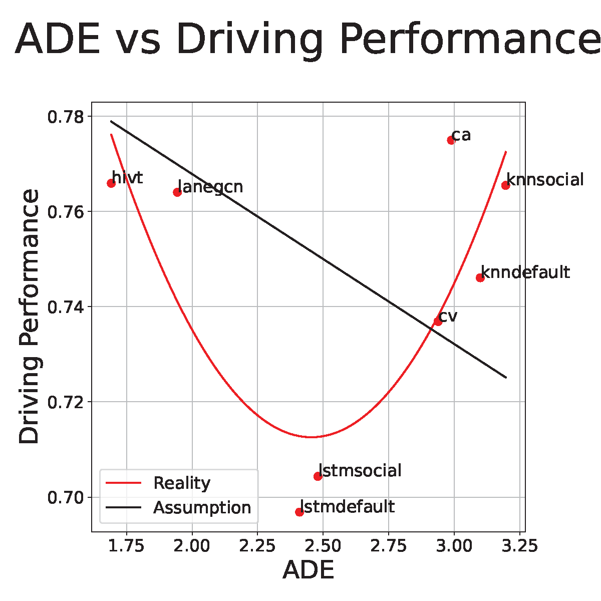
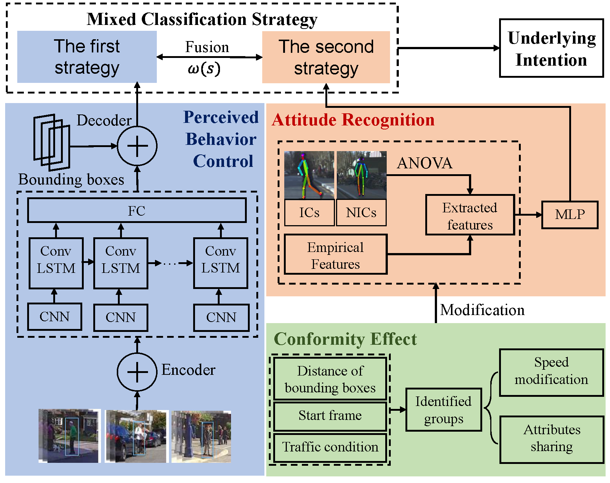
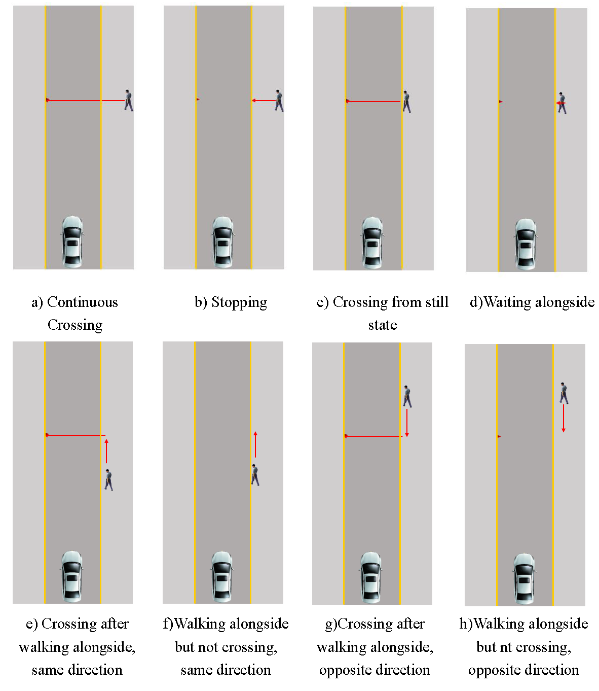

|
Wu Haoran
I'm currently a Ph.D. candidate at Tsinghua University, adviced by Prof. Sifa Zheng. My research revolves around autonomous driving and deep learning. I'm particularly fascinated by intention recognition, trajectory prediction, and their evaluation protocol. I'm always eager to try out different fields and collaborate with people to explore the possibilities of autonomous driving.
At the moment, I'm enjoying a one-year visiting at AdaComp, School of Computing, National University of Singapore, where I have the privilege of being advised by Prof. David Hsu. I received my B.E. in Vehicle Engineering from Tsinghua University in 2019.
Email /
CV /
Slides /
Google Scholar /
Github
|
|
Research
I'm interested in autonomous driving, deep learning, intention recognition and trajectory prediction. Much of my research is about predicting the future states (intention, position, etc) from past observations. Representative papers are highlighted.
|
|

|
What Truly Matters in Trajectory Prediction for Autonomous Driving?
Haoran Wu*,
Tran Phong*,
Cunjun Yu*,
Panpan Cai,
Sifa Zheng,
David Hsu
NeurIPS, 2023
arXiv
We demonstrate that an interactive, task-driven evaluation approach for trajectory prediction is crucial to reflect its efficacy for autonomous driving.
|
|

|
Applying the Extended Theory of Planned Behavior to Pedestrian Latent Intention Estimation
Haoran Wu, Sifa Zheng, Qing Xu, Jianqiang Wang
IV, 2021
We propose a pedestrian latent intention estimation method based on the extended theory of planned behavior.
|
|

|
Crossing-road pedestrian trajectory prediction based on intention and behavior identification
Haoran Wu,
Likun Wang,
Sifa Zheng,
Qing Xu,
Jianqiang Wang
ITSC, 2020
dataset
We present a novel pedestrian trajectory prediction method that involves pedestrian intention and behavior information into prediction.
|
|
{kind=link}